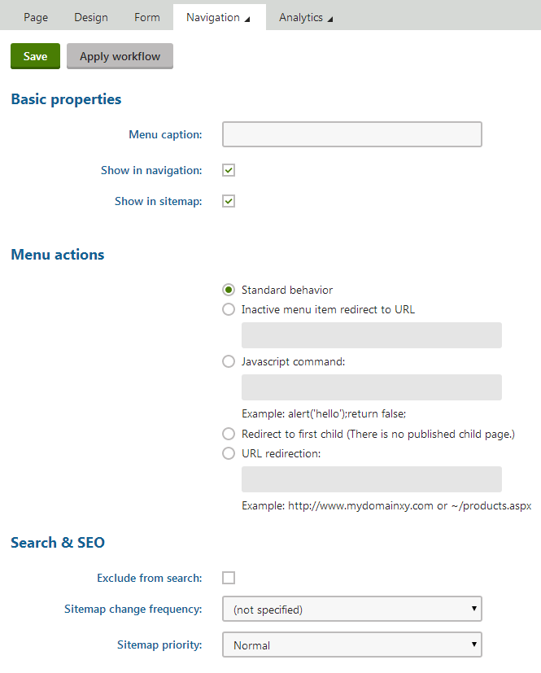

Building website navigation
Navigation is a necessary part of every website. The purpose of navigation is to:
Allow users to easily move between pages
Provide an overview of the website's content
Kentico stores pages in the website content tree. The basic principle of dynamic navigation is to load page data, such as page names and URL information, and use the data to generate links. The appearance of the links primarily depends on the website's CSS.
You can use the following default components to build your site's navigation:
|
Navigation web parts |
Navigation controls |
|
On portal engine pages, build your navigation using the following web parts:
|
Use controls to create navigation on ASPX page templates or inside custom components: |
All navigation components contain a built-in data source for loading pages (except for the Basic repeater web part, and the BasicTabControl control).
You can choose which pages to load by configuring standard page filtering properties, such as the Path, Page types or WHERE condition. Use the Select only published and Check permissions properties to ensure that the navigation is accurate on the live site.
Please be aware of the following behavior when working with navigation components:
Navigation components load and display data according to the navigation properties of pages.
If the Path property is empty, navigation components load all pages on the website (equivalent to /%).
If the Page types property is empty, navigation components load and display only CMS.MenuItem pages.The Breadcrumbs / CMSBreadcrumbs component is an exception, and displays all page types by default.
When writing ORDER BY expressions for navigation components that display pages in a tree structure, the root of the page tree (or sub-tree) must be first in the resulting order. Always start your Order By clauses with the NodeLevel column, for example: NodeLevel, NodeOrder
Navigation data sources always load a default set of page columns (required to correctly display pages in menus). The Columns property allows you to add extra columns if your menu needs data from a field that is not included in the defaults. To find a full list of the default navigation columns, use the SQL queries debugging tool and inspect the query performed by your navigation component.
Creating a flat menu using the Repeater web part
We recommend using the Repeater or Basic repeater web part for creating a flat website navigation. Unlike the CSS List menu web part, you can fully control the HTML code generated for the individual menu elements in the transformation.
Note that compared to the CSS List menu web part, this approach requires additional configuration.
Place the Repeater web part on the page where you want the menu displayed.
Configure the web part's properties:
HTML Envelope -> Content before:
<ulclass="CMSListMenuUL">HTML Envelope -> Content after:
</ul>Create a Transformation. The following example Text/XML transformation replicates the CSS List menu web part with the Display highlighted item as link, Render CSS classes, Render link title properties enabled:
<liclass="{% if (IsCurrentDocument()) { return "CMSListMenuHighlightedLI" } else { return "CMSListMenuLI" } #%}"><ahref="{% GetDocumentUrl() %}"class="{% if (IsCurrentDocument()) { return "CMSListMenuLinkHighlighted" } else { return "CMSListMenuLink" } #%}"title="{% HTMLEncode(DocumentName) %}">{% HTMLEncode(DocumentName) %}</a></li>
(Optional) Configure additional properties.
Save & Close.
Creating a hierarchical menu using the Hierarchical viewer web part
We recommend using the Hierarchical viewer web part for creating a hierarchical (multi-level) website navigation. Unlike the CSS List menu web part, you can fully control the HTML code generated for the individual menu elements in the transformation.
The Hierarchical viewer web part makes use of hierarchical transformations.
Note that compared to the CSS List menu web part, this approach requires additional configuration.
In a container page type, create the transformations that you will need. This example will use a Header, Foooter, and Item transformations of the Text/XML type. We will place code in the transformations later.
Place the Hierarchical viewer web part on the page where you want the menu displayed.
Configure the web part's properties:
In Hierarchical transformations, select the Header transformation.
<ulclass="CMSListMenuUL">Create a new Footer transformation.
</ul>Create a new Item Transformation. The following example Text/XML transformation replicates the CSS List menu web part with the Display highlighted item as link, Render CSS classes, Render link title properties enabled. The {^ SubLevelPlaceholder ^} is a placeholder control that defines an entry point for nested transformations.
<liclass="{% if (IsCurrentDocument()) { return "CMSListMenuHighlightedLI" } else { return "CMSListMenuLI" } #%}"><ahref="{% GetNavigationUrl() %}"class="{% if (IsCurrentDocument()) { return "CMSListMenuLinkHighlighted" } else { return "CMSListMenuLink" } #%}"title="{% HTMLEncode(DocumentName) %}">{% HTMLEncode(DocumentName) %}</a>{^SubLevelPlaceHolder^}</li>
(Optional) Configure additional properties.
Save & Close.
Example - Creating a menu using the CSS List menu web part
The following example demonstrates how you can create a basic two-level menu using the CSS List menu web part.
The CSS List Menu web part loads page data and renders links inside standard HTML lists (composed of <ul> and <li> elements). The links automatically lead to the appropriate page URLs and display the page names in the link text.
Adding the menu web part
Open your website in the Pages application.
Open the new page's Properties -> Template tab.
Select None in the Page nesting section and click Save.
Disabling page nesting is not a required step for creating menus, but allows you to have a completely blank page for the purposes of the example.
Switch to the Design tab.
Add the CSS List menu web part to the page.
Configure the web part's properties:
Content filter -> Maximum nesting level: 2 (ensures that the menu only loads and displays the first two levels of the website's content tree)
HTML Envelope -> Content before: <div class="SimpleMenu">
HTML Envelope -> Content after: </div>
Click OK.
The web part displays an unstyled list of page links. Pages on the second level in the site's content tree appear in sub-lists under the parent pages.
CSS list menu without styles
Defining CSS styles
Implement the design of the menu using CSS stylesheets. You can either assign a separate stylesheet to the page (shown in the example) or use the website's main stylesheet.
Open the page's Properties -> General tab.
Uncheck the Inherit box next to the CSS stylesheet property.
Click New.
Type a Display name for the stylesheet and enter the following CSS code:
.SimpleMenu UL {Border:#c2c2c21pxsolid;Float:left;Font-size:12px;Font-family:Arial;Background:#e2e2e2;Padding:0px;Margin:0px;List-style-type:none;}/* Makes the first menu level horizontal */.SimpleMenu LI {Float:left;}.SimpleMenu A {Padding:3px;Margin:0px;Display:block;Width:120px;Color:black;Text-decoration:none;}/* Highlights menu items on mouse-over */.SimpleMenu A:hover {Background:#808080;Color:white;}/* Hides the second menu level by default */.SimpleMenu UL UL {Display:none;}/* Displays the second level when hovering over an item on the first level */.SimpleMenu UL LI:hover UL {Display:block;Border-top:none;Width:125px;Position:absolute;}Click Save.
Close the CSS stylesheet properties dialog.
Save the page to assign the new stylesheet.
You can now view the menu on the live site. The menu displays the first level horizontally, and the second level appears when hovering over menu items with child pages.
List menu with CSS styes applied
Setting navigation properties for pages
You can configure how individual pages behave and appear when displayed by menus or other navigation elements.
Open the Pages application.
Select the page in the content tree (in Edit mode).
Switch to the Properties -> Navigation tab.

Configuring the navigation properties of a document
The navigation settings apply when Kentico navigation web parts and controls display the given page.
Note: The navigation settings are not supported by standard listing components (for example if you display your navigation using a Repeater web part and transformations).
Basic properties
|
Property |
Description |
|
Menu caption |
The name that navigation elements display for the page. If empty, the system uses the page name. |
|
Show in navigation |
Indicates if navigation controls and web parts display the page. Note: Navigation components display pages if all of the following conditions are met:
|
|
Show in site map |
Indicates if the page is included n the website's Google sitemap. Additionally, Site map web parts and CMSSiteMap controls only display pages that have this property enabled. |
Menu actions
|
Property |
Description |
|
Standard behavior |
Clicking the menu item opens the page as expected. |
|
Inactive menu item |
Clicking the menu item doesn't cause any action — the item is disabled. You can also fill in the Redirect to URL field, which allows you to automatically redirect users who access the page to a different location (for example when users access the given page through an external link). |
|
Javascript command |
The page runs the entered JavaScript command when users click the menu item. Example: alert('hello');return false; |
|
Redirect to first child |
Redirects users to the page's first published child page (shown in parentheses). Redirected pages are marked with the |
|
URL redirection |
Redirects users to the target location when they access the given page. Applies in all situations, not only when users click on navigation elements. Redirected pages are marked with the Example: http://www.domain.com or ~/products.aspx |
 icon in the content tree.
icon in the content tree.Adding macro expressions
You can use macro expressions in the URL redirection / Redirect to URL and JavaScript command fields. Macros allow you to insert values of the given page, such as the alias path, node name. Use expressions in format {% ColumnName %}.
For example, entering:
~/products.aspx?show=brand&aliaspath={%NodeAliasPath%}
Into the URL redirection field of the /MobileStore/Products/Android page redirects users to:
http://<domain>/products.aspx?show=brand&aliaspath=/MobileStore/Products/Android
Note: The system escapes all apostrophes in the source data to to avoid breaking JavaScript ( ' -> \' ).
Menu design
The menu item design properties are available in three alternatives:
Standard design
Mouse-over design - style used when users hover their mouse over the menu item
Highlighted design - style applied if the page represented by the menu item is selected by the user
These values override:
The settings of individual navigation web parts (controls) unless their Apply menu design (ApplyMenuDesign) property is disabled.
The CSS styles defined in the page's CSS stylesheet.
Note: Some of the properties may not apply to all navigation web parts and controls.
|
Property |
Description |
|
Menu item style |
Style definition of the menu item. Enter values like when writing CSS classes in stylesheets. Sample value: color: orange; font-size: 140% |
|
Menu item CSS class |
Assigns a CSS class from the page's CSS stylesheet. Sample value: h1 |
|
Menu item left image |
Image displayed on the left of the menu item's caption. Sample values:
|
|
Menu item image |
Image displayed in menus instead of the item's caption. You can enter absolute URLs or relative paths. |
|
Menu item right image |
Image displayed on the right of the menu item's caption. |
Configuring additional properties when using listing web parts for navigation
When using the general web parts (Repeater, Basic repeater, Hierarchical viewer) to create a menu, you may want to use certain advanced properties. The following is a list of the specific properties and instructions on how to replicate them:
|
Property |
Description |
Where to replicate |
How to replicate |
|
Preserve the show in navigation flag |
Makes sure only pages that have the Show in navigation property set to true are displayed. |
In the web part's WHERE condition Configure the Show in navigation property for each page in: Pages -> Properties -> Navigation -> Show in navigation |
DocumentMenuItemHideInNavigation = 0 |
|
Select the current page |
Adds a special CSS class to a page if it's the current page. |
In the web part's transformation |
{% if (IsCurrentDocument()) { return "item-current" } else { return "item" } #%} |
|
Highlight the selected path |
Allows the menu to show the path to the page you are currently viewing. |
In the web part's transformation |
{% IsDocumentOnSelectedPath() %} |
|
Custom menu caption |
Allows you to use custom menu captions for specific pages. By default, the system uses the Page name. |
In the web part's transformation Pages -> Properties -> Navigation -> Menu caption |
{% HTMLEncode(String.IsNullOrEmpty(DocumentMenuCaption) ? DocumentName : DocumentMenuCaption) %} |
|
Custom menu CSS class |
Allows you to use custom CSS classes for specific pages. |
In the web part's transformation Pages -> Properties -> Navigation -> Menu item CSS class |
{% HTMLEncode(DocumentMenuClass) #%} |
|
Subitems check |
Allows you to return a custom indicator if a page contains children. |
In the web part's transformation |
{% if (NodeHasChildren) { return "has-children" } %} Workflow: Use Node.Count instead of NodeHasChildren if your pages use workflow. |
|
Item order the same as in Content tree |
Displays the pages in the menu in the same order in which they appear in the Content tree. |
In the web part's ORDER BY condition |
NodeLevel, NodeOrder, NodeName |
Using CSS prefixes
CSS prefixes allow you to:
Specify different styles for any level of hierarchical menus
Place multiple menu web parts or controls of the same type on the same page and differentiate their CSS classes
You can work with CSS prefixes when using the CSS list menu web part (property name: CSS prefix) or CMSListMenu control (property name: CSSPrefix).
Note: To use CSS prefixes with the CSS list menu, you need to enable the Render CSS classes property.
Example
The following example shows how to specify different styles for individual levels of a CMSListMenu control (or the CSS list menu web part):
Fill in the CSSPrefix property of the control or the web part with the following value: MainMenu;SubMenu;OtherLevels
Semicolons separate individual levels of prefixes.
Every prefix represents a lower level of the menu, starting from the main level (0).
The last defined prefix also represents all remaining sub-levels.
If you only wish to differentiate between CSS classes used by multiple menus on the same page, setting one prefix level is sufficient.
Define the following CSS classes in the page's stylesheet:
/* Classes applied to the first level of the menu (level 0) */.MainMenuCMSListMenuUL.MainMenuCMSListMenuLI.MainMenuCMSListMenuLink/* Classes applied to the second level of the menu (level 1) */.SubMenuCMSListMenuUL.SubMenuCMSListMenuLI.SubMenuCMSListMenuLink/* Classes applied to all underlying levels of the menu (level 2 and lower sub-levels) */.OtherLevelsCMSListMenuUL.OtherLevelsCMSListMenuLI.OtherLevelsCMSListMenuLinkSet the names of the CSS classes according to the following format: <CSS prefix> + <Class used by the menu component>
The web part/control applies the appropriate CSS classes when rendering the corresponding levels of the menu.